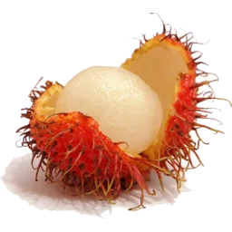
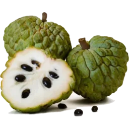
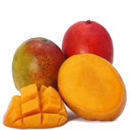
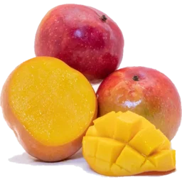
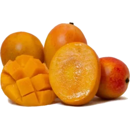
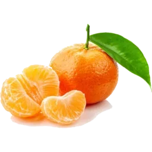
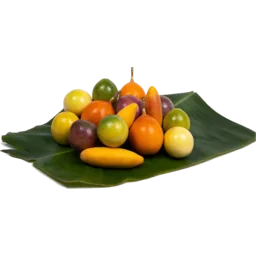

Exotic fruit,
something for all.
Fruit in any flavour, texture, shape and size,
from all over the world, in one shop!
A collection of everything in season around the world,
contact us
to ask about availability of a specific fruit!
Exotic fruits
Discover fruits from around the world, from common favourites with exotic twists
to rare and unusual varieties with familiar tastes, all carefully selected for their
quality, freshness and flavour. We have a range of fruits that you simply won't find
in an ordinary greengrocer, with new and unusual varieties arriving throughout the year.
Our selection follows the seasons and the availability of the very best produce from
growers and suppliers across the globe.
From creamy durian and fragrant Buddha's Hand to extremely sweet yellow pitaya,
intensely aromatic rambutan and immensely sour curuba passion fruit, every fruit has
its own character, flavour and story. Some are prized for their sweetness, some for
their acidity, and others for flavours and textures that are almost impossible to
compare to anything more familiar. We love finding fruits that give our customers
something genuinely new to discover.
Our exotic fruit selection isn't simply about finding the strangest fruits we can.
We look for exceptional varieties from the places where they grow best.
Whether you're looking to try something completely new, searching for a particular fruit,
recreating a recipe from abroad, or simply interested to find out what's in season,
there's always something worth exploring. Some fruits are seasonal rarities that may only
appear for a short time, while others return throughout the year. If you've never tried
something before, our team can also help you choose; because sometimes the most unusual
fruit turns out to be your new favourite.





Mangoes
Mangoes are one of the world's most diverse fruits, with hundreds of varieties grown across tropical and subtropical regions. From intensely sweet and creamy varieties to fragrant, tangy and fibreless mangoes, each cultivar has its own distinctive character. We source a wide selection from around the world, bringing together some of the most interesting and sought-after mangoes in one place. Whether you prefer a rich, honey-like sweetness, a delicate floral aroma or a more traditional tropical flavour, there is a mango for every palate. Some mangoes we sell depending on season include: Amrapali, Anwar Ratol, Apple, Ataulfo, Banana, Bangapalli, East Indian, Green, Haden, Julie, Kent, Langra, Rose-Shaped Dried, Shelly, Sugar, TJC and Vilad mangoes! For an even more extensive list detailing individual mangoes and their seasonality and flavour, check our online store .









Dragon fruits
Dragon fruits are known for their striking appearance, with vibrant flesh that can range from bright white to deep crimson. Although they are often associated with a mild, refreshing sweetness, different varieties can have surprisingly different flavours and textures. We source white, red and yellow dragon fruit, each offering its own balance of sweetness, fragrance and juiciness. The yellow pitahaya are particularly prized for their intensely sweet and fragrant flesh, while white dragon fruit tends to be lighter and more delicately flavoured. Red-fleshed varieties offer a richer colour and can have a deeper, fruitier flavour. Their crisp, juicy texture makes them delicious eaten fresh, while their vivid colours also make them an excellent addition to fruit platters, desserts and drinks. Dragon fruits are available throughout the year! Whether you are trying dragon fruit for the first time or looking for a particular variety, our selection offers an opportunity to experience just how diverse this unusual-looking fruit can be.


Citrus
Citrus fruits are far more diverse than the familiar oranges, lemons and grapefruits found in most supermarkets. Our selection includes unusual varieties from different parts of the world, ranging from intensely sweet mandarins and richly coloured blood oranges to aromatic kaffir limes, kumquats and distinctive Japanese citrus. Each variety brings its own combination of sweetness, acidity, fragrance and bitterness. Some citrus are prized primarily for eating fresh, while other varieties are particularly useful in cooking, baking, cocktails and preserves. Blood oranges can have beautifully coloured flesh and a deeper, more complex flavour, while kumquats can be eaten whole with their fragrant skin. Kaffir limes are valued for their intensely aromatic peel, and unusual mandarins and grapefruit varieties can offer flavours that are considerably more complex than their everyday counterparts. We look for citrus with excellent flavour, freshness and distinctive characteristics, following the seasons to bring in varieties when they are at their best. From familiar favourites to unusual fruits that you may never have encountered before, our citrus selection is constantly changing. It is a category where there is always something new to discover, whether you want something sweet and easy to eat or a fruit with a more intense and distinctive character.





Passion fruits
Passion fruits are celebrated for their intensely aromatic flavour and vibrant, juicy interiors, but the familiar purple passion fruit is only one of many varieties available. Our selection can include different types of passion fruit and passionfruit relatives, from sweet and fragrant granadilla to intensely tart maracuya and the sour curuba. Each has its own balance of sweetness, acidity, aroma and texture. The contrast between the crisp or leathery exterior and the intensely flavoured pulp inside is part of what makes passion fruits so appealing. Some varieties are exceptionally sweet and fragrant, while others have a much sharper acidity that makes them particularly useful in desserts, drinks and sauces. The seeds are an important part of the experience too, adding a satisfying crunch to the soft, aromatic pulp. Passion fruits are particularly dependent on season and growing conditions, so the varieties available can change throughout the year. We enjoy sourcing different types because they demonstrate just how much variety exists within the passionfruit family. Whether eaten with a spoon, added to yoghurt and desserts, or used to bring acidity and fragrance to a dish or drink, they offer a flavour that is difficult to replicate with anything else.



Bananas
Bananas may be one of the world's most familiar fruits, but the varieties we stock can be a world away from the everyday supermarket banana. From intensely sweet Sugar bananas and distinctive Red bananas from Ecuador to traditional Sri Lankan varieties, each has its own flavour, texture and character. Red bananas, for example, have a distinctive reddish-purple skin and can develop a wonderfully sweet, almost berry-like character when fully ripe. Other varieties can be creamier, firmer or more aromatic than the bananas most people are accustomed to. Some are best enjoyed fresh, while others are particularly suited to cooking, frying or incorporating into traditional dishes. As with our other exotic fruits, we select bananas based on their variety, quality and eating characteristics rather than treating them all as the same fruit. Availability depends on the season and what can be sourced at its best. From unusual fresh varieties to products such as banana chips, our banana selection offers a different perspective on one of the world's most versatile fruits.


Our fruits
Guaranteed to
supply to your taste
Our team can suggest fruits based on your preferences, whether you enjoy sweet, sour, tropical, or unusual flavours. We have fruits fitting every flavour profile imaginable. Each visit is an exciting new encounter with interesting new exotic fruits.

Online exotic fruit shop
My Exotic Fruit